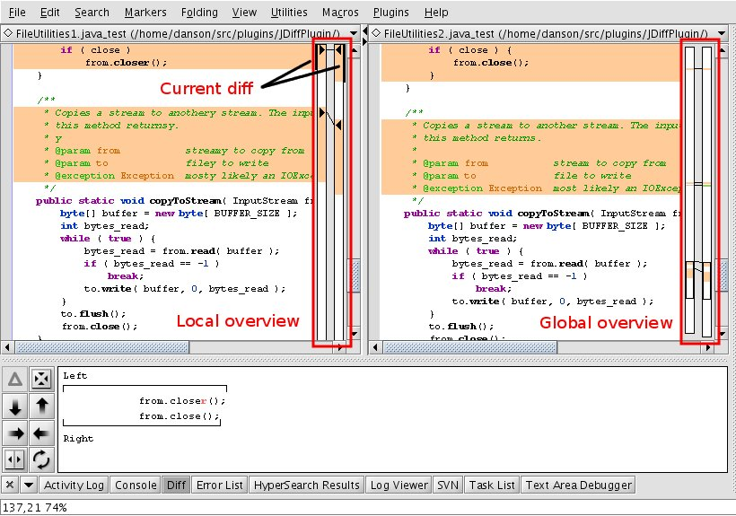

Authors: André Kaplan, Mark Wickens, Dale Anson
Permission is granted to copy, distribute and/or modify this document under the terms of the GNU Free Documentation License, Version 1.1 or any later version published by the Free Software Foundation; with no Invariant Sections, Front-Cover Texts or Back-Cover Texts, each as defined in the license. A copy of the license can be found in the file COPYING.DOC.txt included with jEdit.
JDiffPlugin is a visual diff and merge utility for jEdit.
It features:
Diff overviews (local and global)
Synchronized scrolling
Ignore case option
Ignore leading and trailing whitespace option
Ignore amount of whitespace option
Ignore all whitespace option
Normal diff output
Visual merging of differences between two files
The simplest method is to open the Dual Diff Dialog (Plugins -> JDiff -> Show dual diff dialog) and choose the files to compare.
But you can also:
Split your view in two (vertically)
Edit the buffers you want to compare:
the buffer on the left is the original
the buffer on the right is the revision
Activate JDiff: Plugins > JDiff> Dual Diff
Or if you have JDiff docked:
Figure 1 shows the result
Once JDiff is activated as in Figure 1, you should see:
Text Highlights
A local overview (right of the original)
A global overview (right of the revision)
If you have activated the Diff dockable, you'll also see the merge controls and the line overview.
By default:
Changed lines appear in yellow
Deleted (from the original) lines appear in red
Inserted (to the revision) lines appear in green
Invalid lines appear as thin dark grey lines.
In the original, invalid lines indicate where a block was inserted in the revision.
In the revision, invalid lines indicate where a block was deleted in the original.
The local overview shows how the visible changed/inserted/deleted blocks from the original and the revision relate to each other. Merging between files can be performed by clicking a right arrow in the local overview, which will select the corresponding text from the original and replace the related text in the revision. The blocks to be merged are indicated by vertical black bars so it is obvious which code is moving. Clicking a left arrow in the local overview will select the corresponding text block from the revision and replace the related text in the original. Note that the code moves are by block, not by line, so the entire diff will be moved.
The global overview should help you estimate how the two edited buffers differ. It also displays two cursors which indicate the visible parts of the two buffers. Clicking within the global overview will move the view to the corresponding part of the file.
The line overview shows character-by-character differences between the current cursor lines within a diff block. This makes it easy to see the difference of even a single character change between the left and right lines. This overview only shows one line at a time of the diff block, move the cursor within the block to see the individual line differences for each line.
The left line is shown above the right line. Above the left line is a bounding graphic to show the start and end of the line, which helps see whitespace at the start and end of the line. If the option to ignore line separators is unchecked, the line separator characters will be shown beyond the end of the bounding graphic so that any differences in line separators between the two files can be easily seen.
The merge control has 8 buttons. From left to right in horizontal mode:
 Move to previous
diff.
Move to previous
diff. Swap text areas, that is,
put the file that was on the left on the right, and put the file
that was on the right on the left.
Swap text areas, that is,
put the file that was on the left on the right, and put the file
that was on the right on the left.The merge controls can also be displayed vertically or in a compact form (as shown in the image above), and with or without the line overview. The vertical display is convenient for the left or right docking areas. The horizontal layout works well in the top or bottom docking areas. The compact layout uses less vertical space in the top or bottom docking areas when the line overview is also displayed.
These commands are available on the plugin menu:
Refresh: refreshes the diff display
Go to previous/next difference
Ignore case: toggles the "Ignore case" option for the current diff
Ignore leading and trailing whitespace: toggles the "Ignore leading and trailing whitespace" option for the current diff
Ignore amount of whitespace: toggles the "Ignore amount of whitespace" option for the current diff
Ignore line separators: toggles the "Ignore line separators" option for the current diff
Ignore all whitespace: toggles the "Ignore all whitespace" option for the current diff
Normal Diff Output: generates a diff file using the normal method
These settings can be made in the JDiff General options panel, Plugins -> Plugin Options... -> JDiff Plugin -> General
You can configure how JDiff performs a diff. JDiff can:
Ignore case: lines are compared without regard for case.
Ignore leading and trailing whitespace: lines are compared as if leading and trailing whitespaces were removed.
Ignore amount of whitespace: lines are compared as if any
leading and trailing whitespaces were removed
sequence of whitespaces were replaced by one single space.
Ignore line separators: lines are compared as if all line separators were removed.
Ignore all whitespace: lines are compared as if:
any leading, trailing and inner whitespaces were removed
There are two performance settings:
Merge control layout
These settings can be made in the JDiff Colors options panel, Plugins -> Plugin Options... -> JDiff Plugin -> Colors
You can configure the colors of:
Changed lines
Deleted lines
Inserted lines
Invalid lines
Left cursor in the global overview
Right cursor in the global overview
The source code is distributed under the GPL. Please see http://www.fsf.org/copyleft/gpl.html
The preferred way to send bug reports is to use the Sourceforge Bug Tracker at http://sourceforge.net/bugs/?group_id=588
You can also write to:
jEdit-users mailing-list jedit-users@lists.sourceforge.net
or jEdit-devel mailing-list mailto:jedit-devel@lists.sourceforge.net
Version 3.1.1 (Dale Anson and Shlomy Reinstein)
- fixed some bugs in the implementation of 'patch' - incorrect usage of the
line numbers in the patch file, incorrect computation of offsets between
the original and the patched file
Version 3.1.0 (Dale Anson)
- Added ability to move all non-conflicting diff changes at once
- Added two new configuration options, one to use faster diff heuristics and a second to minimize the number of diff hunks
- Fixed the 'Diff' button on the tool bar so it is active at the right time
- Fixed a problem where unsplitting would cause a stack overflow error
Version 3.0.0 (Dale Anson)
- applied patch from Sean McNamara to optionally scroll text areas to first diff and
to optionally select the first word of the diff
- adjusted line diff to scroll to make first diff visible
- combined color option panes to make it easier to set the highlight colors
- now requires CommonControls 0.9.5 to take advantage of the new version of KappaLayout
- fix for 2775807, text areas not restored to previous positions
- major rewrite of synchro-scroll code (part of fix tracker 2777214)
- rewrote diff highlighting to fix tracker 2777214
- added option so user can turn off synchro-scroll if desired
- major rewrite of DualDiff, which altered the API significantly, so I bumped
the version number to 3.0. This rewrite was prompted by an attempt to fix
tracker 277214, and was necessary to clean up some threading issues.
Version 2.2.1 (Dale Anson)
Bug fix release:
- 2755385, problem with moving diff hunk from one side to the other
when hunk is at bottom of buffer.
- 2540573, added option for user to decide if the View should be
restored after a diff, added message to user indicating if files had been
closed during diff.
Version 2.2.0 (Dale Anson)
- fix for 2095399, don't unsplit and resplit when the view is already
set correctly for a diff.
- added option to turn off annoying beeps
Version 2.1.0 (Dale Anson)
- fix for 1963921, rendering problem in overview bar
- added scrollbar to line diff so the end of long lines can
actually be seen
- fixes to better follow look and feel, editor scheme settings, and
user color settings
- added code to auto-identify the patch file type so the user
doesn't have to know the type and appropriate error messages can be
displayed for unsupported types
- fix for 1996223, JDiff now restores split configuration to its
previous state after a diff
- fix for 1969175, JDiff was showing dockable when it shouldn't
Version 2.0 (Dale Anson)
- added ability to apply normal and unified diff
- added EditBus message needed by SVNPlugin to know when diff
session is ended
Version 1.9.0 (Dale Anson)
- Added dependency on CommonControls plugin.
- Moved button tooltip text to props file.
- Fix for 1888242.
- Major code clean up and refactoring to clean up display repainting
problems.
- Removed code and references to the virtual overview, that hasn't
worked since jEdit 4.2 and can't be fixed easily due to changes in jEdit's
Display Manager.
- Fixed the little left and right arrows so they are the same size.
- Fixed line diff to use same anti-alias setting used in the main text
area.
- Fix for 1891865.
- Added optional layouts for toolbar and line diff.
- Fix for 1892782.
- Added Diff and Refresh buttons to toolbar.
Version 1.8 (Dale Anson)
Bug fixes, added "Diff" and "Refresh" buttons to
merge controls, major code refactoring to clean up the various
painting issues.
Version 1.7. Added a dockable to display line diff and merge controls. Added merge functionality, added mouse listener to global overview. (Dale Anson)
Version 1.5.2. Fixes to ignore whitespace options (1522563 - aconnor78)
Version 1.5, updated to work with jEdit 4.3pre3+
Version 1.4. Updated to work with jEdit v4.2+, including edits for new JEditTextArea handling and new plugin API.
Version 1.3.2. Last pre-jEdit v4.2 version of plugin by Andr??.
Stuart D. Gathman ported the GNU diff algorithm to Java. See http://www.bmsi.com/java/
Some code and ideas borrowed from JDiff by Mike Dillon (mdillon@jedit.org). See http://sourceforge.net/projects/jdiff